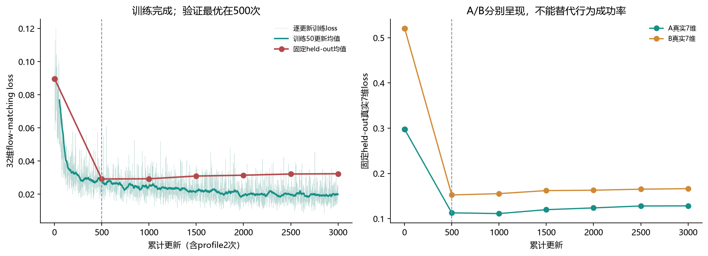
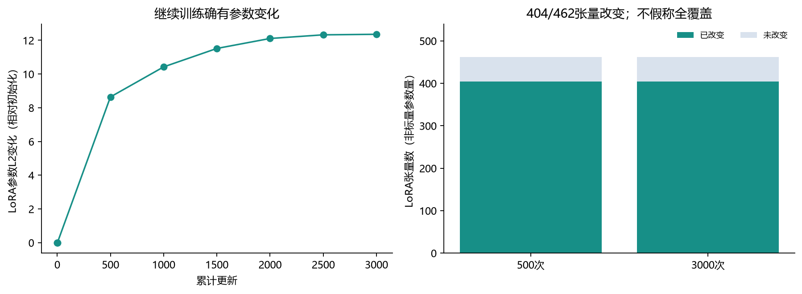
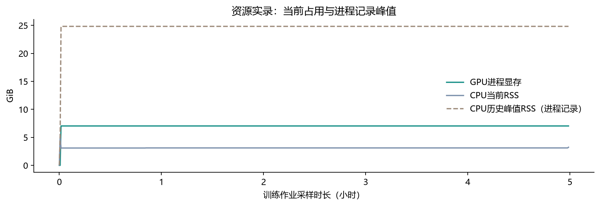

SFT-A / 训练完成记录
3000次更新已完成；
选定500次权重，闭环终评排队中
数据快照：2026-10-28 18:50:28 CST。训练job18658，COMPLETED/0，用时04:59:21。评估job18674，快照时PENDING/Resources。此前完整证据报告。
原计划的3000次更新全部完成，未追加训练。固定held-out loss在500次最低，严格使用该权重进入80回合配对评估。CPU审计8份checkpoint通过；本文没有新的VLA调用、仿真或行为结果。
1. 完整训练与验证曲线

固定验证窗口/噪声与同一整轨迹划分；横轴是梯度更新，不是环境步。训练为离线监督，新增仿真交互0。
| 更新 | 验证32维均值 | A真实7维 | B真实7维 | 改变的LoRA张量 | 参数L2变化 |
|---|
| 0 | 0.089609 | 0.297509 | 0.520525 | 0 | 0.0000 |
| 2 | 0.089610 | 0.297433 | 0.520616 | 202 | 0.0011 |
| 500 | 0.029195 | 0.112833 | 0.152391 | 404 | 8.6393 |
| 1000 | 0.029311 | 0.111207 | 0.155299 | 404 | 10.4212 |
| 1500 | 0.030975 | 0.119862 | 0.162055 | 404 | 11.5147 |
| 2000 | 0.031476 | 0.123755 | 0.162848 | 404 | 12.1068 |
| 2500 | 0.032190 | 0.127999 | 0.165138 | 404 | 12.3232 |
| 3000 | 0.032350 | 0.128237 | 0.166346 | 404 | 12.3547 |
最优点500：均值0.029195、A真实7维0.112833、B真实7维0.152391；最终3000：均值0.032350，较最优高10.8%。这提示后续拟合没有继续改善固定验证集；不足以单独断定内部原因或闭环退化。A真实7维在1000略低，但选择标准是预先固定的双目标32维等权均值，仍选500。
2. 参数变化与保存产物核验

6,043,136个名义LoRA参数、462张量；404张量从初始化发生非零变化。部分native路径未被all_linear有效适配，原profile的覆盖限制保留。
0、2、500、1000、1500、2000、2500、3000共8份checkpoint已在CPU实际读取：逐文件SHA256、配置/数据/底座身份、参数shape与有限性、优化器step和RNG状态结构均通过；最优点按所有保存验证loss重新核对为500。训练中保存的原参数冻结hash一致。此次审计未重新实例化VLA，也未重新计算内存中完整VLA权重hash，不能作更强冻结声明。
选定权重SHA256：7747e4c31aff07f887034c64e1bacb855f9fe592b28f2e66afa116890d6db224。详见CPU审计证据。原训练代码1ede832071e9de25cc92566b241f80916717d675；比较范围仍是同native底座内部，不声称与旧JAX数值等价。
3. 资源与自动推进

GPU进程显存峰值7.04GiB；Torch分配峰值6.57GiB是不同口径。CPU加载峰值约24.8GiB，常驻RSS中位约3.11GiB。
18674自17:57:42排队。计算节点GPU均被占用；账户提交限额阻止额外node1短测。已将同一作业GPU请求从限定3090放宽为gpu:1，计算节点3090/4090均可匹配，继续排除登录节点；保留原job ID、提交时间、代码、权重、种子与预算。两臂在同一个实际分配的GPU上评估，最终报告记录硬件。
训练完成 → 18674执行同native未适配/适配两臂 × A/B × reset3300–3319（80回合，最多32000物理步）→ 独立CPU审计/配对统计/8段预定录像/HTML与ZIP。两个交接进程均已脱离会话并持续更新心跳；当前尚无SFT闭环成功率或仿真视频，待评估生成，不用演示录像冒充策略效果。
powershell -ExecutionPolicy Bypass -File tools/remote.ps1 status 18674
powershell -ExecutionPolicy Bypass -File tools/remote.ps1 status 18658
4. 下一步判断
先等80回合完成，分开看B正确首抓、B选择性完成、A保留和执行链路，再选一个研究分支。离线loss下降不足以启动新的SFT-S/PPO或再次3000更新；本轮总SFT预算已用完。保留集和旧确认集未用于选权重。资源等待时间由调度器决定，当前无可靠开始时间承诺。